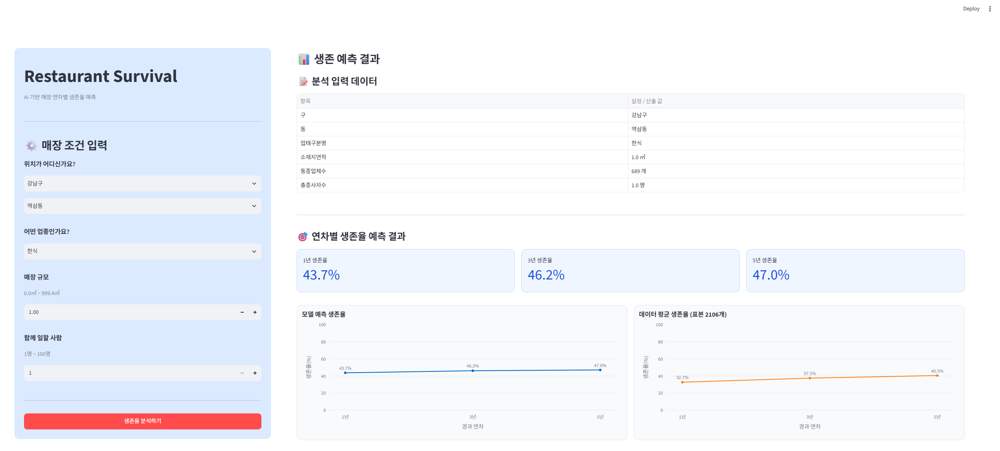
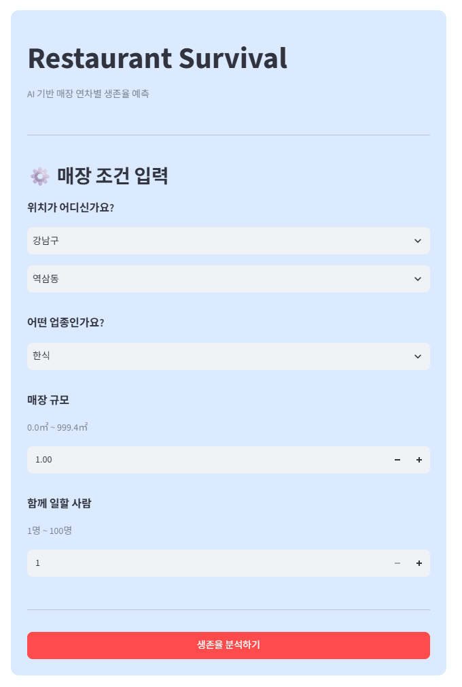
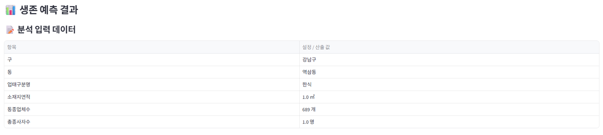
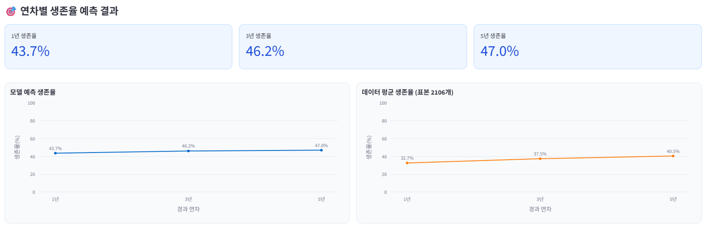
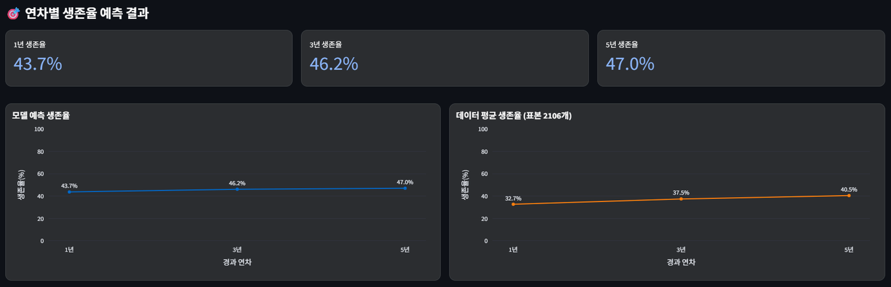

Machine Learning Project · 2026
음식점 생존 예측Restaurant Survival
가게를 열 동네와 업종을 고르면,
1·3·5년 생존 확률과 같은 동네의 실제 평균을 나란히 보여줍니다.

Problem
"여기서 이 가게, 몇 년이나 버틸까?"
음식점 창업을 준비하는 사람은 동네와 업종, 매장 규모를 정해야 합니다. 하지만 그 선택이 얼마나 위험한지 숫자로 확인할 방법은 마땅치 않습니다. 이런 질문에 답하고 싶었습니다.
"역삼동에 한식집을 열면 3년 뒤에도 영업하고 있을까?"
"같은 동네라면 분식과 카페 중 어느 쪽이 오래 버틸까?"
"매장을 더 크게, 직원을 더 많이 두면 달라질까?"
| 기존 방법 | 할 수 있는 것 | 부족한 점 |
|---|---|---|
| 주변 사람에게 묻기 · 감 | 경험담을 빠르게 들을 수 있음 | 개인 경험에 치우치고 근거가 되는 숫자가 없음 |
| 공공데이터 원본 직접 보기 | 서울시 음식점 인허가·폐업 기록 확인 | 53만 행, 39개 컬럼이라 일반인이 분석하기 어려움 |
| 음식점 생존 예측 | 조건 5개만 고르면 1·3·5년 생존 확률과 같은 동·업종의 실제 기록 평균을 함께 제공 | |
대상 사용자: 서울의 예비 창업자와 소상공인
Demo
조건 5개를 고르고, 버튼 하나만 누르면 됩니다
사용자는 구·동·업종·면적·종사자 수를 고르고, 기간별 생존 확률 카드 3개와 꺾은선 그래프 2개를 받습니다. 비교할 실제 데이터가 없는 조건이면 빈 그래프 대신 안내 문구가 나옵니다.








How it works
공공데이터 한 파일이 예측 화면이 되기까지
왼쪽 세 단계는 미리 한 번 해 두고, 사용자가 버튼을 누르면 오른쪽 두 단계가 실행됩니다. 파란 테두리는 제가 맡은 단계입니다.
정제 · 파생 변수
2000년 이후 인허가만 남기고 불필요한 컬럼과 결측을 정리한 뒤, 구·동·총종사자수·동종업체수를 만듭니다.
→ 335,694건
기간별 라벨링
1·3·5년 이상 관측된 가게만 골라 데이터셋을 나누고, 폐업이면 0, 영업이면 1을 붙입니다.
3년 142,574
5년 103,500
모델 학습·선정
세 모델을 비교해 F1이 가장 높은 Random Forest를 고르고, 기간별로 저장합니다.
model_3y.pkl
model_5y.pkl
예측 API
동종업체수를 DB에서 세고, 모델 3개로 확률을 계산하고, 같은 동·업종 평균을 찾습니다.
화면 표시
입력 화면(조혁준), 생존율 카드(김병수), 꺾은선 그래프 2개(박하영)로 예측값과 실제 평균을 나눠 보여줍니다.
vs 32.7 · 37.5 · 40.5%
원칙: 모델 확률 하나만 보여주지 않습니다. 같은 동·업종의 실제 기록 평균과 표본 수를 항상 함께 보여줘, 사용자가 예측값을 사실처럼 믿지 않도록 했습니다.
My part · 박하영
데이터를 다듬고, 모델을 고르고, 결과를 보여주기까지
4명 중 데이터 → 모델 → 결과 그래프로 이어지는 흐름을 맡았습니다. 정제된 원본을 기간별 학습 데이터로 바꾸고, 모델을 비교해 최종 모델을 고르고, 그 결과를 예측과 실제 평균으로 나눠 보여주는 그래프를 만들었습니다.
지번주소 "서울특별시 강남구 역삼동 …" → 구 "강남구", 동 "역삼동" 남성종사자수 1 + 여성종사자수 2 → 총종사자수 3 인허가일자 + 3년 ≤ 최종수정시점, 상태 "폐업" → 3년 데이터셋에 포함, label = 0
- 같은 구·동·업종의 가게 수로 동종업체수를 만들어 경쟁 정도를 변수로 넣었습니다.
- 1·3·5년 데이터셋을 따로 만들어 기간마다 다른 모델을 학습했습니다.
맡은 일
- 데이터 전처리·라벨링파생 변수 4개 생성, 1·3·5년 데이터셋 분리 (원본 정제는 이규남 팀원과 분담)
- 변수 선정·모델 비교LightGBM 중요도·SHAP 분석, 변수 6개 선정
- 최종 모델 선택과 저장RF·GB 비교(LR은 이규남 팀원 실험) 후 F1 기준 Random Forest 선택, pkl 저장
- 결과 화면 시각화Plotly 꺾은선 그래프(예측 vs 실제 평균), 라이트/다크 테마 대응
53만 행을 학습할 수 있는 데이터로
원본에는 우편번호, 좌표, 전화번호처럼 생존과 관계없는 컬럼이 많고, 면적·주소가 빈 행도 있었습니다. 원본 정제는 이규남 팀원과 나눠 맡았고, 저는 파생 변수와 기간별 라벨링을 맡았습니다. 정리한 뒤 기간별로 "그 기간 이상 관측된 가게"만 남기니, 기간이 길수록 데이터가 줄었습니다.
정제한 내용 (이규남 팀원과 분담)
- 컬럼
- 우편번호·좌표·전화번호 등 29개 제거
- 기간
- 2000-01-01 이후 인허가만 사용
- 결측
- 면적·지번주소 없는 행 제거, 종사자 수 결측은 0
- 타입
- 인허가·폐업·최종수정 일자를 날짜형으로 변환
새로 만든 변수 (내가 맡은 부분)
- 구 · 동
- 지번주소를 공백으로 나눠 추출
- 총종사자수
- 남성 + 여성 종사자 수
- 동종업체수
- 같은 구·동·업종 안의 업체 수
- label
- 기간별 폐업(0) / 영업(1)
어떤 변수가 생존을 가르는지 먼저 확인
후보 변수 9개를 LightGBM에 넣고 Gain 기준 중요도와 SHAP 값을 확인했습니다. 그다음 중요도 순서대로 변수를 하나씩 더하며 성능을 비교해, 최종 모델에는 6개를 사용했습니다.
위치(동)와 매장 면적이 가장 중요했고, 같은 지역 같은 업종의 경쟁 정도(동종업체수)가 그 뒤를 이었습니다.
정확도 1등이 아니라 F1 1등을 골랐습니다
Random Forest와 Gradient Boosting, 그리고 이규남 팀원이 실험한 Logistic Regression을 같은 데이터(클래스 비율을 유지한 8:2 분할)로 비교했습니다. 정확도만 보면 Gradient Boosting이 가장 좋아 보였습니다.
왜 정확도를 믿지 않았나
데이터의 64~71%가 폐업입니다. 모든 가게를 "폐업"이라고 찍기만 해도 정확도가 그만큼 나옵니다.
Gradient Boosting의 정확도 0.68은 이 수준과 비슷했고, F1이 0.07이라 사실상 한쪽 클래스만 예측하고 있었습니다.
최종 모델 설정
- 모델
- RandomForestClassifier
- 트리
- n_estimators 300, max_depth 10
- 잎 노드
- min_samples_leaf 3
- 불균형
- class_weight "balanced"
- 전처리
- Pipeline + ColumnTransformer
(중앙값·최빈값 대치, 원-핫 인코딩) - 저장
- 1·3·5년 모델 3개를 pkl로 저장
전처리를 모델과 한 파이프라인으로 묶어, 서버에서는 원본 형태의 입력을 그대로 넣어도 같은 변환이 적용되도록 했습니다.
예측과 실제를 헷갈리지 않게 보여주기
모델 확률은 참고값일 뿐인데, 숫자 하나만 크게 보여주면 사용자는 그것을 사실처럼 받아들입니다. 그래서 예측과 실제 평균을 색과 그래프를 나눠 보여주도록 설계했습니다.
같은 조건, 두 개의 그래프
- 두 그래프 모두 y축을 0~100%로 고정해 같은 눈금으로 비교
- 실제 평균 그래프 제목에 표본 수(예: 2,106개)를 표시해 믿을 만한지 판단할 근거 제공
- 비교할 데이터가 없으면 빈 그래프 대신 "해당 지역/업종의 데이터가 없습니다" 안내
- 1·3·5년 값은 위쪽 생존율 카드(김병수 팀원)로 먼저 보여주고, 그 아래 그래프로 기간에 따른 흐름을 확인
Streamlit에 없는 테마 감지를 직접 구현
Streamlit은 현재 라이트/다크 테마를 알려주는 기능이 없어, 화면 배경색의 밝기를 JavaScript로 계산해 판별했습니다.
const rgb = bgColor.match(/\d+/g);
const brightness = (r*299 + g*587 + b*114) / 1000;
body.setAttribute('data-my-theme',
brightness < 128 ? 'dark' : 'light');
new MutationObserver(detectAndApplyTheme)
.observe(app, { attributes: true, subtree: true });
Results
숫자로 본 결과
세 모델 중에서는 Random Forest가 두 클래스를 가장 균형 있게 구분했습니다. 다만 성능 자체는 아직 높지 않아, 서비스에서는 참고용 수치로 안내합니다.
모델 비교 수치는 팀 발표자료 기준이며, 기간별(1·3·5년) 최종 모델의 성능은 따로 기록하지 못했습니다. 폐업 비율과 표본 수는 서비스 DB를 직접 조회한 값입니다.
Limits & Next
아직 부족한 점과 다음 단계
프로젝트를 마친 뒤 데이터를 다시 살펴보며 찾은 문제입니다. 지금 결과를 해석할 때 주의할 점이자, 다음에 고칠 목록입니다.
한계
- 라벨 정의: "N년 시점의 영업 여부"가 아니라 "N년 이상 관측된 가게의 현재 상태"로 라벨을 만들어, 5년 생존 비율(35.5%)이 1년(28.8%)보다 높게 나오는 역전이 생겼습니다.
- 데이터 누수 가능성: 동종업체수를 생존 라벨의 합으로 계산한 뒤 학습/평가 데이터를 나눠, 정답 정보가 입력에 섞였을 수 있습니다.
- 변수 부족: 임대료, 유동인구, 매출처럼 생존에 큰 영향을 줄 변수가 없습니다.
- 주소 혼입: 고양시·부천시 등 서울 밖 주소가 섞여 구 목록이 33개가 되었습니다(서울은 25개).
- F1 0.48: 기준선보다는 낫지만, 실제 의사결정에 쓰기에는 아직 낮은 성능입니다.
다음 단계
폐업일자 − 인허가일자 ≥ N년이면 생존으로 보도록 라벨을 다시 정의하고, 생존 분석(Kaplan-Meier 등)도 검토- 데이터를 먼저 나눈 뒤 학습 데이터에서만 동종업체수를 계산
- 서울시 상권 데이터(유동인구·추정매출)를 동 단위로 결합
- 주소의 시·도를 검증해 서울 데이터만 남기고, 법정동 코드로 구·동 매핑
- 1·3·5년 모델별 Accuracy·F1·ROC-AUC를 파일로 남겨 비교
Team & Links
B팀
4명이 진행한 머신러닝 팀 프로젝트입니다. 프런트엔드와 백엔드는 목업 데이터로 각자 먼저 개발한 뒤, API가 완성된 시점에 연동했습니다.
| 이름 | 역할 | 담당 업무 |
|---|---|---|
| 박하영 | 데이터 전처리, 모델링, 결과 시각화 | 기간별(1·3·5년) 라벨링과 파생 변수(구·동·총종사자수·동종업체수) 생성, LightGBM·SHAP로 변수 분석, Random Forest와 Gradient Boosting을 비교해 최종 모델로 Random Forest를 정하고 저장, Plotly 꺾은선 그래프(모델 예측과 실제 평균 비교), 라이트/다크 테마 대응 |
| 이규남 | 데이터 전처리, 모델 비교, API 서버 | 원본 데이터 정제, Logistic Regression 실험·비교, FastAPI 예측 API(엔드포인트 6개)와 SQLAlchemy·SQLite DB 구축 |
| 조혁준 | 프런트엔드 (입력 화면) | 매장 조건 입력 화면 (구·동·업종·면적·종사자 수 선택) |
| 김병수 | 프런트엔드 (결과 화면) | 1·3·5년 생존율 예측 결과를 카드로 표시 |